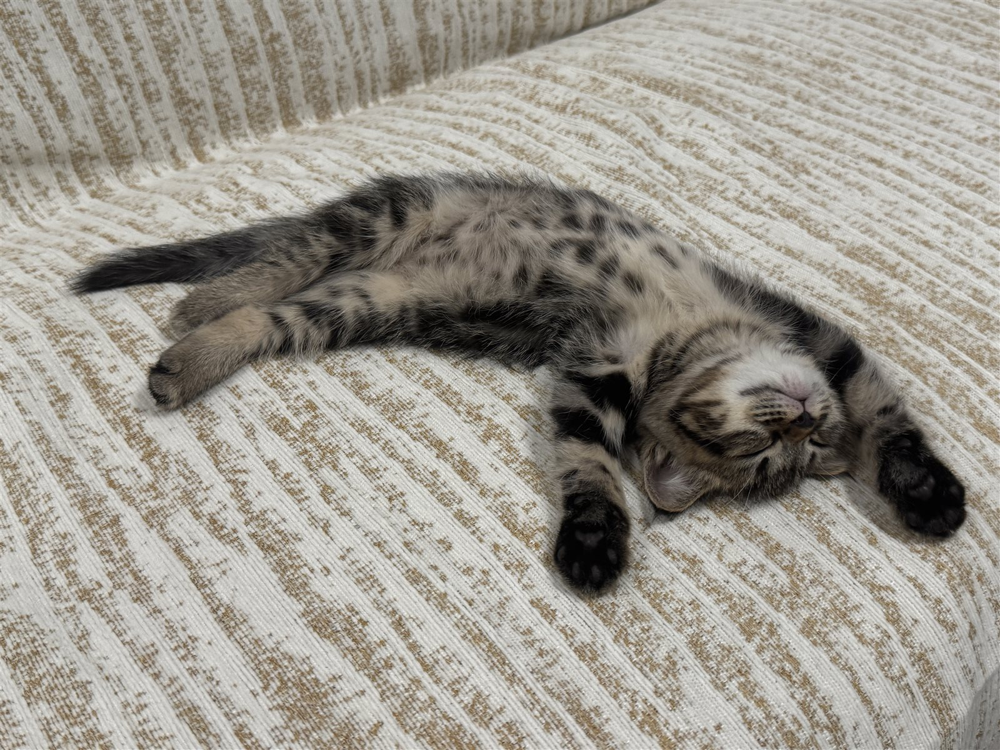
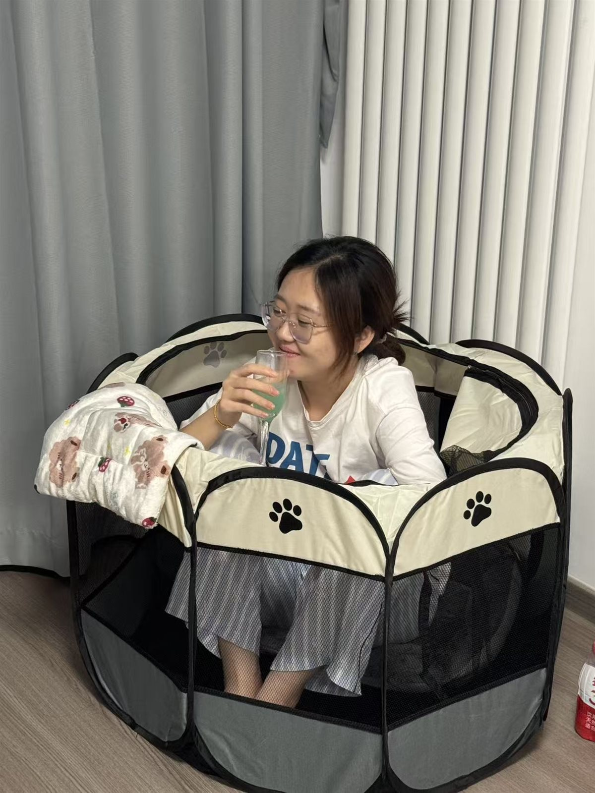
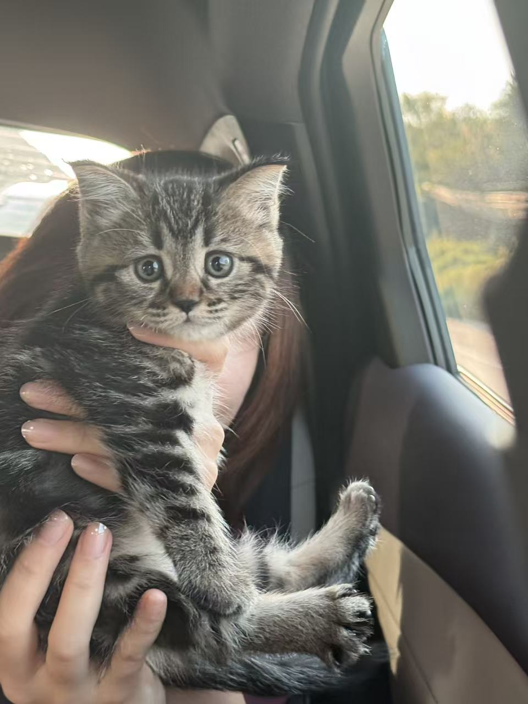
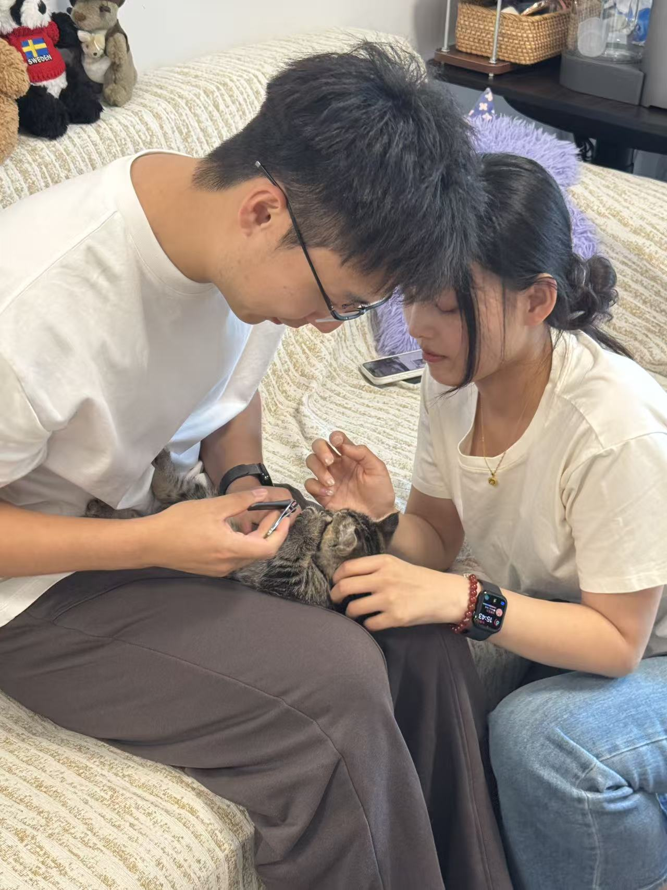
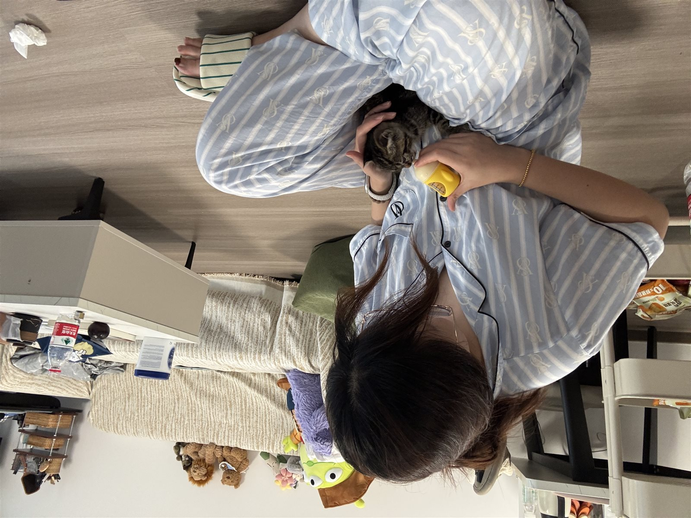

9 月 13 日 · 最新记录
1.05 kg比 3 天前长了 0.15 kgDOMI'S LITTLE WORLD
你好，我是
哆咪 Domi
一只在夏天出生的小蓝猫。妈妈曾是一只流浪蓝猫，2026 年 9 月 5 日，我带着好奇心走进了新的家。
生日7 月 14 日
到家日9 月 5 日
当前体重1.05 kg

小小探险家哆咪
✦♡
GROWING UP
成长轨迹
每一点变化，都是值得珍藏的足迹。
9.100.90 kg第一次体重记录
9.131.05 kg第二次体重记录 · +0.15 kg
MEMORY LANE
哆咪大事件
按下快门，把第一次都收进时间里。
14JUL
2026 · 出生
来到这个世界
妈妈是一只勇敢的流浪蓝猫。04SEP

2026 · 准备
小猫用品就位
小窝、餐具和玩具，家里开始有了哆咪的位置。05SEP

2026 · 到家
欢迎回家，哆咪
第一次踏进新家，从此被温柔接住。12SEP

2026 · 见面
认识了新朋友
第一次见到来家里的朋友，认真观察中。13SEP
2026 · 健康
第一次 PCR 检查
去宠物医院检查打喷嚏的问题，勇敢完成检查。健康档案
日常 · 01EVERYDAY MOMENTS
平凡日子里的
小小幸福
“妈妈给 Domi 喂奶。”
被妈妈护在怀里的时光，是哆咪最初、也最柔软的记忆。
小猫的幸福很简单 ♡PHOTO ALBUM
哆咪相册集
收藏每一个可爱瞬间。